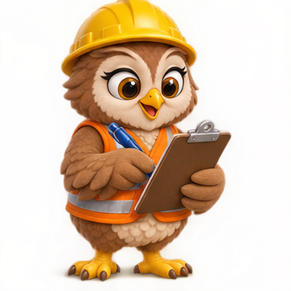

Onderwijsvoorstel · niveau 2
Waar gaan de 240 SBU naartoe?
De opdrachturen zijn een lokale verdeling; SBB schrijft de totale studielast van K0516 voor.

Totaal · 240 SBUVerdeling per opdracht
| Nr. | Opdracht | SBU |
|---|---|---|
| 01 | AArno’s Arbo-scan | 8 |
| 02 | Risico’s herkennen | 14 |
| 03 | Lichaam en belasting | 20 |
| 04 | Ergonomisch werken | 20 |
| 05 | Arbeidsmiddelen en elektriciteit | 20 |
| 06 | Gevaarlijke stoffen en geluid | 20 |
| 07 | Werkdruk en stress | 20 |
| 08 | Pesten, agressie en gedrag | 20 |
| 09 | Melden en bespreekbaar maken | 20 |
| 10 | Gezonde gewoontes (BRAVO) | 20 |
| 11 | Oefenscan werkplek | 24 |
| 12 | Eindscan, portfolio en reflectie | 34 |
| Totaal | 240 |
Verantwoording van de studielast
De uren omvatten meer dan contacttijd. Studenten krijgen instructie, oefenen met herkenbare situaties, passen stappen toe op een zelfgekozen werk- of stageplek en verzamelen bewijs in hun portfolio.
Waarom deze spreiding? De opbouw gaat van basisbegrippen en voorbeelden naar begeleide toepassing en een eigen Arbo-scan. De verdeling houdt rekening met niveau 2: studenten handelen op basis van instructies en bespreken nieuwe of onveilige situaties met een begeleider.
Officiële basis: K0516 heeft een studielast van 240 uur. Het keuzedeel richt zich op fysieke en psychosociale risico’s, leefgewoontes, herkennen, beheersen, alarmeren en bespreekbaar maken.